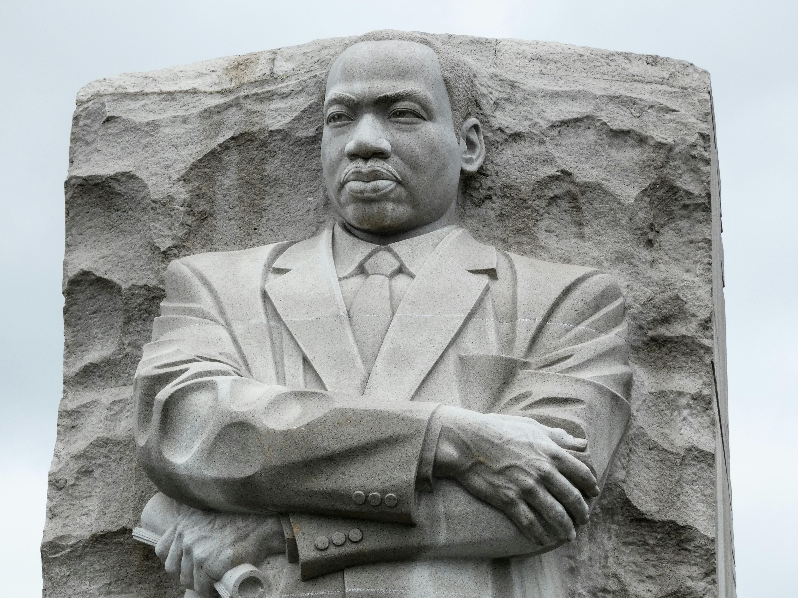

The Diversity Problem:
The issue of modern democratic liberalism
Introduction
Our world has only recently begun to move away from discriminating against differences, whether based on race, gender, or other factors. Our former world ran rampant with discriminative biases restricting the opportunities of people who were not white males. Yet protests run by great leaders began the transition to a more accepting area, with those previously restricted in their rights following the likes of Martin Luther King, in that case for pushing toward a world without racial bias. This has been leading us to a better modern world of acceptance and diversity across all groups of people.

What should have happened after these movements?
These movements sought acceptance and equal rights. They had the potential to create a better modern world, improving on the past's faults. They sought to end sexism and racism, promoting merit-based decisions. The ideal was a world where skills mattered more than skin colour. Bias in judging others is naturally human, but the goal should have been to minimise this bias. This would lead to a diverse, open-minded world judging people on their merit. Yet we have become too far caught up with the end result of diversity, we have forgotten something. Diversity is a byproduct of a world that accepts people for who they are, judging people on merit and not bias. So to become a diverse world, we need to fix our mindset and judgement first. But this has not been what we have done, and now our world has a new problem.
What this has turned into
We have now become too vigorously focused on creating a world of diversity. We are not now judging people wholly, or mostly, on merit. Instead we focus not on seeing and accepting difference, but contriving and forcing difference. Yet very few people seem to recognise this insidious issue. When people claim they are a different species, I have only heard some few academics stand up to this senselessness. In our world now, if someone claims to be a penguin, nobody can question them. This is not a step toward an open and unbiased world, this is a step toward dystopian absurdity! This has now pushed us into creating groupings of different people: LGBT, Muslim, Asian, and so on. How is this contributing toward a diverse future? The LGBT group has now evolved into the LGBTIQA+ group, encompassing anyone who is not straight. So you are now in either the straight group or the non-straight group. This isn’t contributing to an unbiased and accepting world, this is just categorising. Furthermore, this has now entered the media where there must be “diversity” — Disney is an obvious example of this. In the recent show called The Acolyte, which I do believe to be a great show nonetheless, I have noticed their profuse application of “diversity”. In the first two episodes, the only white male characters I saw were the prisoners, as well as one background character with very insignificant screen time. As I have made clear in the previous section of this article, there is no issue with diversity and diversity is, in actuality, a byproduct of something we should strive for. When I look ahead to the future of humanity through the lens of an optimist, I see great diversity and minimal bias. Yet when I look into our future trajectory according to my observations, I do not see a future I would like to live in.
The looming threat
I now will share something of a contradiction:
Who is pushing this modern 'diversity'?
The modern democratic liberalists.
What are the real fundamentals of this 'diversity'?
Profuse equity
Where is equity prioritised and enforced?
In communism.
Do democratic liberalists claim to be capitalist or communist?
They claim to be capitalist.
Notice now that the problem I’m raising is not with diversity, it's with these people who are enforcing it. People who claim that they are capitalists in our western democracy. Yet, whether they realise it or not, they are supporting the values and leaning the same way as those they fight against. Is this just some mere ignorance? Or could it be running deeper through our world?